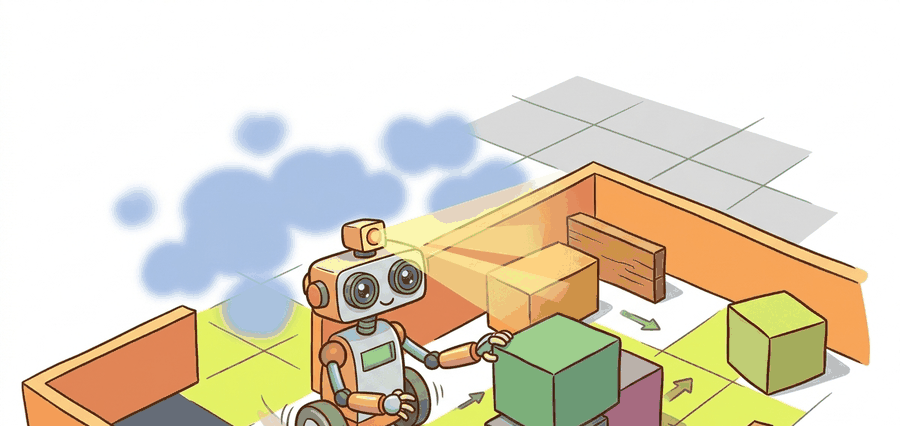

"A grid cell is a decision about where the robot may spend risk."
A Loop Closure That Came Back With Receipts

Mapping and occupancy grids is the state-estimation half of embodied autonomy. The robot has partial, noisy, time-stamped evidence; it must turn that evidence into a pose, a map, and an uncertainty statement that a planner can actually trust.
Problem First
A robot map is a probabilistic memory of what sensor rays have implied. Free space, occupied space, and unknown space must stay distinct because a planner should treat unseen cells differently from cells observed as empty.
Occupancy grids update each cell through inverse sensor models, often using log odds for numerical stability. A range ray decreases occupancy probability along free cells and increases it near the measured endpoint. The map is therefore a belief field, not a bitmap.
A map result is incomplete without resolution, frame, timestamp, update rule, decay policy, inflation radius, and the planner layer that reads it. A clean map image does not prove safe traversability.
Formal Model
For occupancy grids, the posterior is a cell-wise belief over free, occupied, and unknown space conditioned on sensor rays and robot pose. The planner consumes inflation, freshness, and uncertainty, not only a black-and-white bitmap.
$$ L_t(c)=L_{t-1}(c)+\log\frac{p(c\mid z_t,x_t)}{1-p(c\mid z_t,x_t)}-L_0(c) $$
The evidence terms are inverse sensor model, ray casting, pose uncertainty, update rate, decay policy, and map resolution. Each one changes whether a cell is safe to traverse or only looks safe in a stale grid.
Consider a specific case: a LiDAR ray 4 meters long hits a wall. The inverse sensor model assigns log-odds of roughly -0.4 to each of the 39 free-space cells the ray passes through, and +0.9 to the endpoint cell. After ten identical scans the endpoint reaches log-odds +9, converting to $p \approx 0.9999$ occupied. The prior term $L_0(c)$ (typically 0, meaning 50% prior) is subtracted once per update to prevent the prior from being counted twice: without that subtraction, each update would silently add the prior on top of the evidence and cells would drift occupied even with no sensor hits. Clamping the log-odds to a range such as $[-5, +5]$ keeps cells recoverable: a cell incorrectly marked occupied can clear again after a handful of free-space rays, rather than requiring hundreds of scans to undo an extreme log-odds value.
- Transform each sensor ray into the map frame.
- Mark traversed cells as free evidence and endpoint cells as occupied evidence.
- Update log odds, then clamp values to avoid irreversible certainty.
- Publish costmap layers that keep unknown, lethal, inflated, and traversable cells separate.
Worked Diagnostic
Code Fragment 1 is the occupancy update smoke test: one ray should clear free cells, mark an endpoint, and leave unseen space unknown. If that invariant fails, larger maps will fail quietly.
# Apply log-odds updates for free and occupied evidence.
# The probabilities show how repeated rays change a grid cell belief.
import math
def sigmoid(x):
return 1.0 / (1.0 + math.exp(-x))
log_odds = 0.0
for update in [-0.4, -0.4, 0.9]:
log_odds += update
print(f"log_odds={log_odds:.1f}, p_occ={sigmoid(log_odds):.2f}")Expected output interpretation. The first two updates make the cell increasingly likely to be free, then the occupied endpoint evidence pushes it back toward uncertainty. The final value near 0.5 is exactly the interpretation to watch for: the map has conflicting evidence, so a cautious planner should not treat this cell as confidently traversable.
Tool Workflow
Nav2 costmaps, OctoMap, Voxblox-style volumetric maps, and Open3D point-cloud processing turn this update idea into maintained map layers and visualization workflows. The library path handles ray tracing, inflation, serialization, and map publication.
Use the hand grid update as a regression test, then use OctoMap, costmap_2d, Voxblox, or Nav2 layers for scale. The production tool is allowed to be complex; the occupancy invariant should remain simple.
Stale occupancy grids cause silent, hard-to-trace path failures. When a robot maps a corridor, a person walks through, and the robot replans 30 seconds later, the corridor cells may still show "occupied" if the decay policy is too slow or absent. The planner then routes around a phantom obstacle. The failure looks like a planning bug but the root cause is a missing obstacle-age term in the costmap. A grid without a decay or timestamp layer is only safe in static environments; dynamic scenes require explicit cell expiry or a separate dynamic-obstacle layer.
A warehouse mapping log should store raw scans, robot pose, occupancy probabilities, inflation layer, obstacle decay state, planner cost, and recovery action. That single replay explains whether a blocked route was a map problem or a planner choice.
Mapping research is moving toward hybrid metric, semantic, and neural maps. The key embodied question is how those richer maps expose conservative, inspectable costs to planners rather than only attractive reconstructions.
A grid cell is a decision about where the robot may spend risk.
Can you state the state variables, observation residual, uncertainty representation, replay artifact, and most likely field failure for mapping and occupancy grids? If one field is vague, the estimator is not ready for embodied use.
Mapping and occupancy grids is production-ready only when geometry, uncertainty, timing, and action consequences are tested together.
Run one map update with static obstacles and one with a moved obstacle or stale shelf. Report cell probability, inflation status, planner clearance, and whether recovery behavior invalidates the old route.
What's Next?
Continue to Section 29.5: Graph-based and visual SLAM, where this state-estimation contract becomes the input to the next embodied capability.
Section References
Durrant-Whyte, H. and Bailey, T. "Simultaneous Localization and Mapping." IEEE Robotics and Automation Magazine, 2006. https://ieeexplore.ieee.org/document/1638022
Classic SLAM tutorial that frames the estimation problem and the role of uncertainty.
GTSAM Project. "Factor Graphs and GTSAM." Official documentation. https://gtsam.org/
Primary tool reference for factor graphs, smoothing, pose graphs, and robotics estimation examples.
ROS 2 Navigation Project. "Nav2 documentation." Official documentation. https://navigation.ros.org/
Primary documentation for integrating localization, maps, planners, controllers, behavior trees, and recoveries.